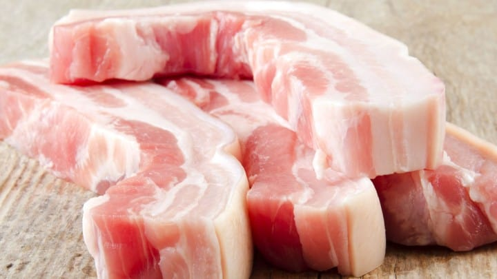
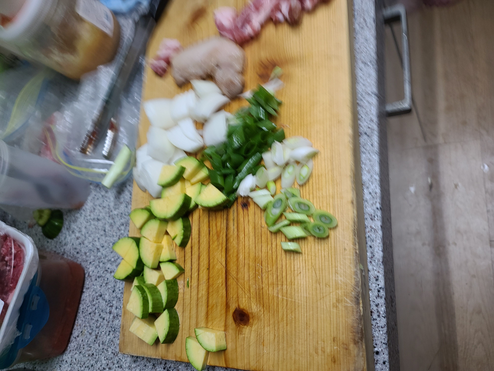
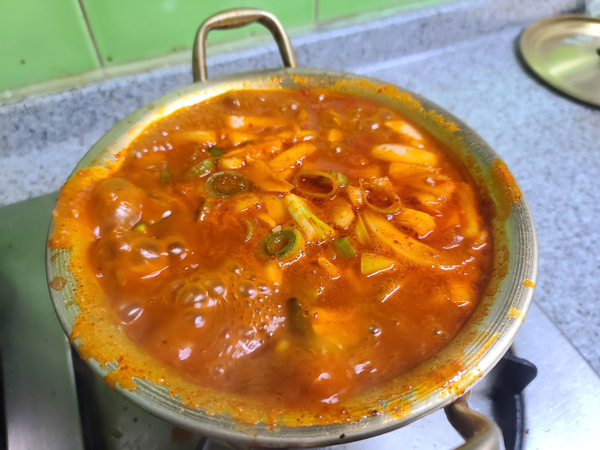
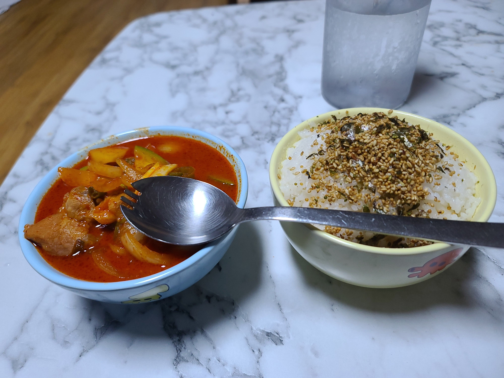

평소 집에서도 해먹기 좋은 고추장찌개 !! 하지만 자취를 하시는 분들은 만들기 어렵다 라고 생각할수 밖에 없는데요...실상은 전혀 그렇지 않습니다!
여기 블로그는 우리가 직접 상남자스럽고 맛있게 만들게 해줄 수 있는 블로그 입니다!! 서론이 길었으니 바로 시작해볼까요?
1. 맛있는 반찬을 먹으려면 우선 신선한 재료부터 골라야한다!!

필자가 만드려고하는 음식외에도 모든 음식을만들때는 알맞는재료와 신선한 재료부터 고르는게 가장 중요합니다 .
신선도에 따라서 맛과 비쥬얼이 결정될수도있기때문이죠!.
신선하지 못한 재료를 고르고 시작하게된다면 맛이 없을수도 있거니와 심각한경우는 식중독,장염 등의 질병에 노출될수도 있습니다!
재료준비
삼겹살 300g
식용유 2큰술
감자 2개
양파 1개
애호박 1/3개
청양고추 2개
대파 1뿌리
고추장 3큰술
고춧가루 1큰술
다진마늘 1큰술
소금 1꼬집
후춧가루
물 500ml
2. 재료 손질하기!
신선한 재료를 준비했다면 손질을 하는것도 아주 중요합니다.
기껏 준비해온 재료를 비 위생적이게 조리를 한다면 문제가 발생할수도있습니다 .
야채는 깨끗하게 씻은 후 물기를 닦아내고 한입 크기로 먹기 좋게 잘라야합니다.
야채를 자르고난 칼을 흐르는물에 깨끗하게 씻어준 후 삼겹살도 먹기좋은 크기로 잘라줍니다.
생고기는 질길수 있으므로 칼질을 할때 다치지않게 주의해야합니다.
3. 조리하기
먼저 냄비에 식용유를 2큰술 돌려 부어준 후 가열을 시작합니다 .
기름이 밑바닥에 충분히 둘러졌다면 잘라둔 삼겹살, 후추, 소금을 먼저 넣고 밑바닥에 눌러붙지않고 잘 익을수 있도록 숟가락으로 저어줍니다 .
삼겹살이 익기 시작한다면 고추장과 다진마늘, 감자를 넣습니다.
고추장을 먼저 넣고 볶는 이유는 고추장 자체의 텁텁함이 마늘, 삼겹살 기름에 의해 사라지고 보다 감칠맛을 낼수있기때문에 먼저 넣고 볶아주는게 좋습니다.물을 넣고 끓을때 넣어도 좋지만 감칠맛이 부족해집니다 .
고추장을 잘볶아줬다면 500ml 를 부은 후 애호박을, 청양고추를 썰어넣고 3분정도 가열을 합니다 이때 고추장이 잘 퍼질수있도록 숟가락으로 잘 저어줍니다.
3분정도 끓여서 끓기 시작한다면 썰어둔 대파,고춧가루를 넣고 1분정도 더 끓입니다 .
1분정도 더 끓이는 과정중 간을 보고 부족하다면 소금을 더넣거나 설탕을 1티스푼정도 첨가해주면 보다 나은 맛을 낼수있습니다 .

위의 과정을 다 마쳐서 먹기좋게 끓여진 찌개는 팔아도 되는거 아냐 싶을정도의 비쥬얼과 맛이 나올겁니다
완료된 과정을 볼까요?
요리가 어렵다 라고 생각하셨겠지만 훌륭하게 따라하셨고 해내셨을겁니다
보기 좋은 떡이 맛도 좋다고했습니다. 다 만들었다면 그릇에 드실만큼 보기좋게 덜어내서 드시면됩니다.
